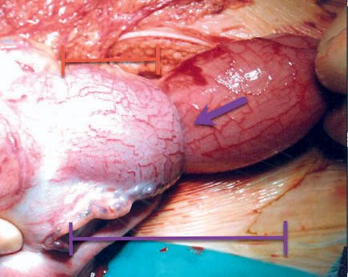
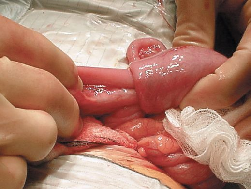
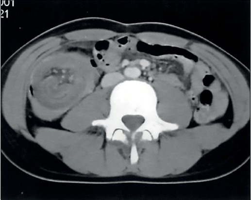
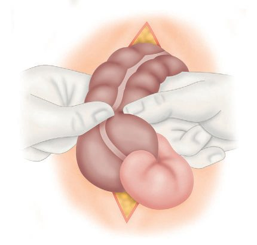

Intussusception
Summary
Intussusception is invagination of a proximal segment of bowel (the intussusceptum) into the adjacent distal bowel (the intussuscipiens), most commonly ileocolic, and is a leading cause of intestinal obstruction in infancy, typically presenting between 3 months and 3 years of age with colicky pain, vomiting, and a palpable mass [1][2][3]. Diagnosis is by ultrasound (target/doughnut sign) and treatment is initially by air or hydrostatic enema reduction, with surgery reserved for failed reduction, perforation, peritonitis, or a pathological lead point [1][4].
Definition
Intussusception occurs when a segment of bowel (intussusceptum) telescopes/invaginates into the adjacent distal bowel (intussuscipiens) [1][5]. Ileocolic intussusception is a telescoping of the distal ileum into the cecum [2].
Pathophysiology
- More than 80% of childhood intussusceptions are ileocolic, beginning proximal to the ileocaecal valve with an apex in the ascending or transverse colon [4].
- The lead point is most commonly viral-induced lymphoid hyperplasia of a Peyer's patch (idiopathic), with marked swelling of lymphoid tissue at the ileocecal valve region; it is unclear whether this swelling is a cause or effect of the intussusception [2][4].
- Fewer than 10% of infants have an identifiable pathological lead point, though pathological leads (e.g., Meckel's diverticulum, duplication cyst, polyp, small bowel lymphoma) are found more commonly in children over 2 years and in recurrent cases [1][4].
- In older children the incidence of a pathologic lead point rises to up to 12%, with Meckel's diverticulum the most common lead point; other causes include intestinal polyps, an inflamed appendix, submucosal hemorrhage from Henoch-Schönlein purpura, a foreign body, ectopic pancreatic or gastric tissue, and intestinal duplication [2].
- Postoperative small bowel–small bowel intussusception without a lead point can occur in up to 5% of pediatric cases, typically after retroperitoneal surgery [2].
- Strangulation of the intussuscepted segment can progress to gangrene and perforation [4].
- In adults, intussusception accounts for only about 2% of bowel obstruction and typically presents in the sixth to seventh decade; the vast majority of adult cases have a demonstrable inflammatory lesion or neoplasm as the lead point (malignant in almost 50% of these), with up to 20% idiopathic [6].

Clinical features
- A classic triad, abdominal pain (with pallor, screaming, and restlessness), a palpable sausage-shaped mass (mid-abdominal or right upper quadrant), and passage of "redcurrant jelly" stool, is seen in fewer than one-third of cases [1].
- A previously healthy infant presents with colicky pain, vomiting, and drawing up of the legs; between episodes the child initially appears well, and later may pass a redcurrant jelly stool [4].
- The infant is typically quiet and lethargic between bouts of pain [1].
- Other features include vomiting (bilious if obstructed), a sausage-shaped mass, abdominal distention, and colicky right-upper-quadrant pain [3].
- Currant jelly stools reflect vascular congestion rather than bowel necrosis and are not by themselves an indication for resection [3].
- Half of children presenting with intussusception are younger than 1 year of age, and less than 25% occur after age 2 [2].
- Multiple boluses of fluid resuscitation are often needed, and dehydration, abdominal distension, and a palpable right upper quadrant mass are signs [1][4].

Etiology
- Intussusception peaks between 6–9 months of age (Oxford Handbook) or between 2 months and 2 years generally (Bailey & Love), with a male predominance [1][4].
- Incidence is cited as 1 in 250 infants [1].
- The occurrence of intussusception is associated with a history of recent viral gastroenteritis, upper respiratory infections, and even administration of the rotavirus vaccine, implicating lymphoid swelling in its pathogenesis [2].
Diagnosis
- Ultrasound is the diagnostic test of choice, showing the intussusception in cross-section as a "doughnut" or "target" sign [1][3].
- Sonographic findings include the target sign on transverse view and the "pseudokidney sign" on longitudinal view [2].
- A plain abdominal radiograph may show a soft tissue mass, small bowel obstruction, a paucity of gas in the right iliac fossa, and free air indicating perforation; on plain film, ileocolic intussusception can be suspected in about 50% of cases by a mass, sparse colonic gas, or complete distal small bowel obstruction [1][2][4].
- An air (or contrast) enema is both diagnostic and therapeutic [1][8].

Treatment and Management
- Initial management is resuscitation with intravenous fluids, broad-spectrum antibiotics (to cover bacterial translocation), and nasogastric decompression before attempting reduction [1][4].
- Hydrostatic reduction by air or contrast enema is the therapeutic procedure of choice, contraindicated in the presence of peritonitis, perforation, or hemodynamic instability/shock [2][4].
- More than 70–80% of intussusceptions are reducible non-operatively by enema; success is recognized by air/contrast flowing into the small bowel and resolution of symptoms and signs [2][3][4].
- An intussusception located entirely within the small bowel is unlikely to reduce with an enema and more likely has a pathologic lead point requiring surgery [2].
- Maximum air-contrast enema pressure is 120 mm Hg, and maximum barium column height is 1 meter (3 feet); exceeding these values carries a high perforation risk and mandates proceeding to the operating room if reached after an hour of attempted reduction [3][8].
- Partial or incomplete reduction, or a first recurrence, may warrant a repeat attempt after a few hours [1][2][3].
- Evidence of perforation during attempted enema reduction mandates immediate cessation, and a compromised infant with tension pneumoperitoneum requires percutaneous decompression via the right iliac fossa [1].
- Surgery is indicated without an enema attempt if there is peritonitis or perforation, and the operative indications otherwise include bowel obstruction at initial presentation, failed hydrostatic reduction, or multiple recurrences [1][2].
- A third recurrence may be an indication for operative management [2].
- Analgesia and sedation may aid the reduction process [1].
- Most patients recover rapidly after reduction, with resumption of oral feeding within 24–48 hours [1].
NICE has no guideline on intussusception, so the UK contribution to this topic is the assessment framework for the unwell infant and the fluid regimen used to resuscitate one. The presentation that matters, an infant who is intermittently inconsolable, pale during episodes, and progressively less responsive between them, maps directly onto the NG143 traffic light system, which asks the clinician to grade risk before a diagnosis is reached and to direct management by the level of risk [9].
- Several red-column features are exactly the findings that mark a late-presenting intussusception: pale, mottled, ashen or blue colour; no response to social cues; appears ill to a healthcare professional; does not wake, or if roused does not stay awake; a weak, high-pitched or continuous cry; and reduced skin turgor [9].
- The amber column supplies the earlier warnings, in particular capillary refill of 3 seconds or more, dry mucous membranes, poor feeding in infants and reduced urine output, together with tachycardia above 160 beats per minute under 12 months [9].
- The lethargy that textbooks describe between the colicky episodes is, in NG143 terms, an activity-domain feature and is graded rather than dismissed.
- Fluid resuscitation before reduction follows NG29, and the bolus is smaller than the adult figure candidates tend to carry over.
- Use glucose-free crystalloid containing sodium 131 to 154 mmol/litre as a bolus of 10 ml/kg over less than 10 minutes, reassessing after each bolus, and seek paediatric intensive care advice if 40 to 60 ml/kg or more is required [10]. Do not use tetrastarch [10].
- Ongoing losses are replaced separately from maintenance, with 0.9% sodium chloride containing potassium [10].
- The absence of NICE guidance here is not an oversight to work around but a fact about the pathway.
- There is no NICE recommendation on the timing of air or contrast enema reduction, on the number of reduction attempts, or on when to convert to operation; those decisions rest on the surgical evidence set out from the textbook sources above and on local paediatric surgical protocol.
- Where NICE does speak is on the surrounding care of the child, and on antibiotic prophylaxis if operation is required, appendicectomy-style, under the surgical site infection guideline [11].
Surgeries
- Operative reduction may be performed open or laparoscopically [1][2].
- Manual reduction is achieved by squeezing/pushing the mass in a retrograde fashion, reducing the intussusceptum proximally; once reduced, bowel viability is examined [1][2].
- The thickened, edematous lymphoid tissue in the ileocecal region may be mistaken for a tumor, and great caution should be exercised before resecting on this basis [2].
- An irreducible intussusception, or one complicated by infarction or a pathological lead point, requires resection (about 10% of surgical cases require resection) [1][4].
- When resection is required (for failure to reduce, uncertain bowel viability, or an identified lead point) an ileocolectomy with primary anastomosis is usually performed [2].

Complications
- Colonic perforation during pneumatic (air enema) reduction is rare [4].
- Recurrence occurs in about 5–7% (up to 11–15% in some series) of cases after non-operative (hydrostatic/air enema) reduction, usually within 24 hours, and recurrence rates are extremely low (about 3%) after surgical reduction [1][2][3][4].
- Recurrence after enema reduction is usually managed with another air enema reduction [2].
- High fevers are common after reduction and typically resolve without sequelae [2].
- Post-reduction septic shock may occur from release of bacterial products from a viable but damaged bowel segment [1].
- Morbidity is generally low, but delayed diagnosis, inadequate resuscitation, and failure to recognize ischaemic or perforated bowel account for about 1% mortality [1].
- Strangulation can progress to gangrene and perforation if untreated [4].
Prognosis
Most infants recover rapidly after successful reduction (radiological or surgical), with resumption of oral feeding within 24–48 hours [1]. Overall morbidity is low, though delayed diagnosis or failure to recognize ischaemic/perforated bowel is associated with mortality of about 1% [1].
References
- Oxford Handbook of Clinical Surgery, 5th ed., Ch. 13 Paediatric surgery, 5–7% non-operative, 3% operative
- Sabiston Textbook of Surgery, 22nd ed., Ch. 117 Pediatric Surgery, 11% after hydrostatic reduction
- The ABSITE Review, 2022, Ch. 43 Pediatric Surgery, "Bullseye sign"
- Bailey & Love's Short Practice of Surgery, 28th ed., Ch. 17 Paediatric surgery
- Browse's Introduction to the Symptoms and Signs of Surgical Disease, 6th ed., relevant section
- Maingot's Abdominal Operations, 13th ed., Ch. 38, Intussusception section
- Bailey & Love's Short Practice of Surgery, 28th ed., Ch. 78
- Schwartz's Principles of Surgery: ABSITE and Board Review, Ch. 39 Pediatric Surgery, enema pressure should not exceed 120 mm Hg
- NICE Guideline NG143: Fever in under 5s: assessment and initial management. National Institute for Health and Care Excellence, London, UK, 2019, updated 2021., 1.2.3; 1.2.5; Table 2 www.nice.org.uk
- NICE Guideline NG29: Intravenous fluid therapy in children and young people in hospital. National Institute for Health and Care Excellence, London, UK, 2015, updated 2020., 1.3.1; 1.3.3; 1.3.5; 1.3.6; 1.5.3 www.nice.org.uk
- NICE Guideline NG125: Surgical site infections: prevention and treatment. National Institute for Health and Care Excellence, London, UK, 2019, updated 2020., 1.2.12 www.nice.org.uk